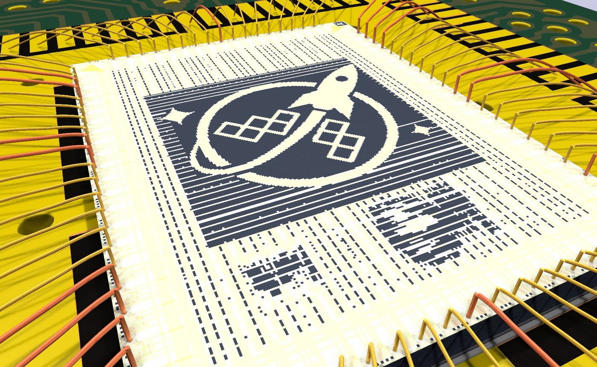
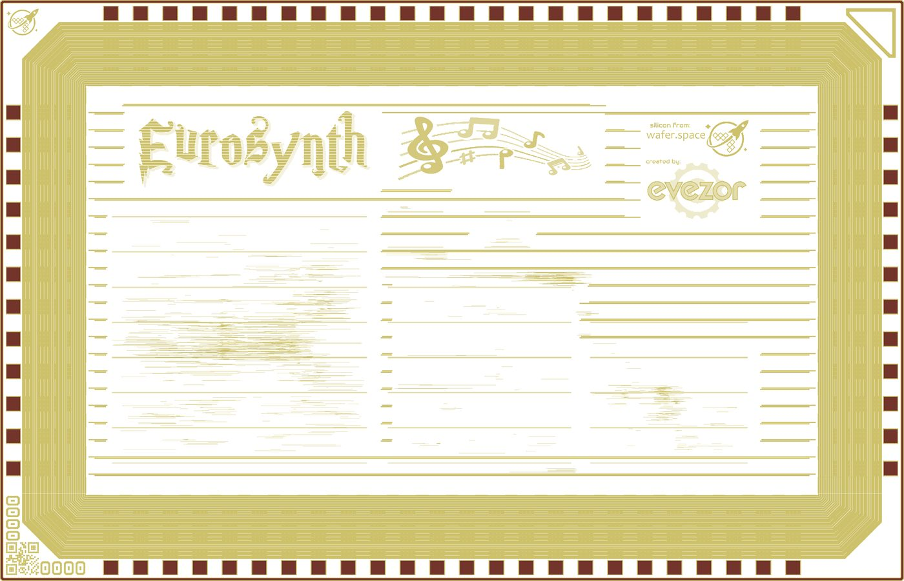
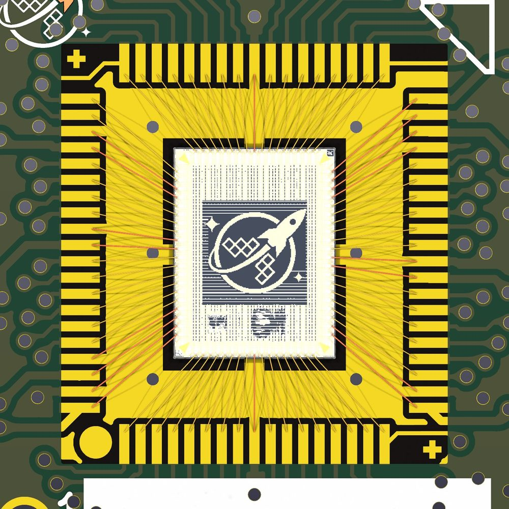
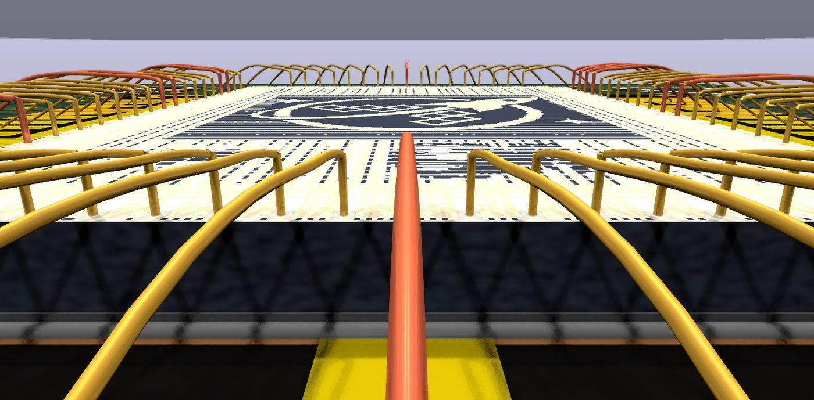

- Pick the wire first. Its diameter, usually 25 µm gold, sets almost every other number: pad size, pad pitch, ball size, longest wire.
- The die is fine and the board is coarse. Die pads sit about 65 µm apart; board lands need about 200 µm. So the lands form a bigger ring and the wires fan out.
- Keep wires short, straight out, and apart. Under about 45° from the pad's outward direction, no crossings, and well under the bonding house's longest wire.
- Leave room around the die for the wire to come down, the bonding tool to reach, and the glob top that covers it all.
- Every number here is a starting point. The bonding house that does your job has the final word. Ask them early.
1What wire bonding is
A die is the small square of silicon cut from a wafer. It has no pins. Around its edge are pad openings, windows in the protective glass layer where bare metal shows. A wire bonder welds a hair-thin gold or aluminium wire to each pad, draws it up into a loop, and welds the other end to a copper land on the board. That is the whole electrical connection.
Ball bonding and wedge bonding
Ball bonding, usually gold wire. The tool, a ceramic tube called a capillary, melts a ball onto the wire end and presses it onto the die pad with heat and ultrasound (thermosonic). It then pulls the wire up into a loop and presses it flat onto the land in a stitch. The wire can leave the ball in any direction.
Wedge bonding, often aluminium wire. A wedge-shaped tool presses the wire flat at both ends with ultrasound. Both bonds are wedges, and the wire leaves each one along the tool's direction, so the board usually turns under the tool between wires.
General background. The rules on this page are mostly written for 25 µm gold ball bonding, because that's what the sources quote most. MIL-STD-883 gives separate ball and wedge limits (B1, B2).
2Words you'll meet
Bonding houses, data sheets and the rest of this page use these terms. They're grouped from die to board to paperwork.
- Pad opening
- The window in the die's glass where bare metal shows. The wire can only bond there. In a GDS it's a layer of its own,
37/0on GF180MCU. - Glassivation, passivation
- The protective glass over the die. A ball that lands partly on it is a weak bond.
- Pitch
- Centre-to-centre distance between neighbouring pads or lands. Smaller pitch packs more wires but leaves less room for the tool.
- First bond, second bond
- The order the bonder makes them. In ball bonding the ball on the die is usually first and the stitch on the board second.
- Ball, stitch, wedge
- The three bond shapes. A ball is round and sits on the pad; a stitch is the crescent where the wire is pressed off; a wedge is a flattened strip.
- Capillary, wedge tool, bond head
- The tool that feeds and presses the wire, and the moving head that carries it. The tool has width, which is why pads and parts need clearance.
- Loop, loop height, loop profile
- The arc of the wire between bonds, how high it rises, and the named shape the bonder follows to form it.
- Span
- The straight plan-view distance from first bond to second. The real wire is longer, by its loop.
- Land, bond finger
- The copper pad on the board that the second bond lands on. It needs a surface finish the wire can bond to; your board house and bonding house agree which.
- Bond ring
- The ring of lands around the die area on the board.
- Down bond
- A wire from a die pad to a land right beside the die, often ground.
- Die attach
- The glue or film that holds the die to the board before bonding.
- Glob top, dam and fill
- Epoxy dropped over the die and wires to protect them. With dam and fill, a raised ring is laid first and the inside is filled.
- Tier
- A height level for loops. Multi-tier designs run some wires higher so they can pass over others; single-tier designs forbid crossings.
- Bond diagram
- The drawing that shows which pad goes to which land. It's the main thing a bonding house asks for.
- Bondlist, offline programming
- A table of bond coordinates, and the software the bonding house uses to turn your drawing into a machine program.
- Class S, class B
- Inspection levels in MIL-STD-883. Class S is for space and is the stricter one. These are reject criteria for finished parts, borrowed here as design guidance.
- d
- Wire diameter. Many rules are written as multiples of it, like 2 × d.
3From GDS to a bonded board
This is the path a die takes in this project. The first three steps are design work you do; the rest is the bonding house's.
- Read the pads from the GDS.The pad opening layer gives every pad's position and size. Net names come from text labels when the flow writes them. GDS has no pad numbering of its own, so pick an anchor; on our die it's the QR code in one corner.
- Place the die on the board and draw the bond ring.Lands go at board pitch, at a set distance from the die edge, with keepouts for tall parts. In this project KiCad holds the board and the GDS holds the die.
- Draw the wires and check them.Each wire runs from a pad to a land. Check length, angle, crossings, gaps and clearance against the rules in section 11. The Wire Bond Bench app does this.
- Send the bond diagram and table.A drawing of pad-to-land connections plus a table of signal, die pad, board land and X, Y coordinates. Some houses also take DXF or a bondlist.
- The bonding house programs and bonds.Their engineer turns your drawing into a machine program, picks the loop shapes, and adjusts anything their process can't do.
- Encapsulate and test.A glob top goes over the die and wires. Then the board gets tested like any other.


4How much to trust a number
There is no single public rulebook for wire bond design. Each bonding house has its own limits for its own wire and tools. What's public is a military inspection standard, a few vendor and lab guides, and folklore. So every rule on this page carries one of four labels saying where it came from.
Sources disagree, and that's normal. Europractice asks for a 55 µm pad opening for 25 µm wire, about 2.2 × d. STFC asks for 3 × d, 75 µm. Both are right for their own process. When two sources differ, design to the stricter one until your bonding house tells you otherwise.
5Size it from the wire
Pick a wire diameter and the drawing below redraws three die pads at Europractice's smallest opening and pitch for that wire, to scale in µm. It's the fastest way to see why the numbers are what they are.
6How long is too long
No source gives one number for the longest wire. They answer four different questions, and the answers differ by more than a factor of two.
What the bonder can do. A house's service limit for its wire and tool. Europractice: 6 mm for 25 µm gold. Samtec: 6.35 mm. Vendor guide
What the wire can hold up. The 100-D rule caps span at 100 wire diameters, 2.5 mm for 25 µm wire, because long wires sag and get swept by flowing mold compound. It comes from molded packages; a glob top flows less forcefully. Rule of thumb
What it clears. Long, low wires sag toward the die edge and their neighbours. MIL-STD-883 rejects a wire that gets too close, whatever its length. Standard
What the signal tolerates. 1 mil gold wire is about 46 mΩ and 1 nH per mm. Too long is whenever that matters to your circuit. Trade article
7Lay out the board
Seen from above, a bonded die is a fan: fine-pitch pads on the die, coarse-pitch lands on the board, and short straight wires between. Most layout rules keep those wires from touching each other, the die, or the tool's path.

8Height and the glob top
The wire has to clear the die's sharp edge on the way down, which is conductive silicon. Above it, the glob top has to cover the highest loop with some to spare, and anything sitting over the board has to clear the glob top.
Rules for the pads and bonds themselves
9Checklist before you send it
Run through this before a design leaves your hands. The keys point to the rules in section 11.
- Choose the wire material and diameter, and write it on the drawing. Everything scales from it.
- Pad openings are at least the smallest size for your wire, and pad pitch at least the smallest pitch. P1, P2, P4
- Lands are at least 100 µm wide at 200 µm pitch on an ordinary board. L1, L2
- The bond ring sits at least 375 µm from the die edge, or twice the die thickness if that's more. L3
- Every wire leaves its pad within 45° of straight out, and no two wires cross. W3, W4
- Every wire is shorter than your bonding house's limit. Under 100 × d if the part will be molded. W1, W2
- Neighbouring wires keep a gap; at least 2 × d for class S. W5, W6
- No pad or land carries more than two wires. P5, P6, L4
- Tall parts sit outside the bond head's 45° keepout. K1
- If there's a glob top, the drawing leaves room for its dam and its height clears anything above it. S4, S5, L5
- Pad 1 and land 1 are marked, and the numbering in the drawing matches the table. Our practice On our die, the QR code corner is the anchor.
- Placeholder rules have been checked with the bonding house. W5, S1, P3, P6, D2
10Working with a bonding house
There is no standard file format for wire bond designs. What houses actually exchange is a drawing, a table and their own machine programs.
What to send
- A bond diagram as a PDF, showing which die pad goes to which land.
- A netlist table: signal, die pad, board land, and X, Y for each.
- Coordinates on a 1:1 drawing centred on 0,0, with bond points accurate to a few µm, and wires sorted by tier if there's more than one.
- A DXF if they ask for one; offline programming tools commonly read it.
What to ask them, early
- Which wire material and diameters do you run?
- What's your smallest pad opening and pitch, and your longest wire?
- Which loop shapes and heights do you use?
- Which land finish and size do you need on the board?
- Do you encapsulate, and how tall does it end up?
- Which files does your offline programming read?
Where this project fits. wirebond.svg (.wb.svg) is our attempt at a file that a person can open as a true-scale bond diagram and a tool can read as data. Wire Bond Bench, in the same repository, imports GDS and KiCad files, generates wires and runs the checks on this page. open.cob.json is a related open format with a broader data model. None of these is something a bonding house expects yet, so send the PDF and table too.
11All 28 rules
The full table behind the checks in Wire Bond Bench. Values are for 25 µm gold ball bonding on an organic board unless the condition says otherwise. The one-page rules sheet draws each rule.

12Sources
Read during this project in November 2026. PDFs were read as extracted text, so their figures weren't checked.
- Europractice, ASIC Prototype Packaging Design Rules, 2024. Vendor guide Pad, pitch and length limits by wire diameter. Written for their packaging service, mostly ceramic and QFN.
- Samtec, Advanced Package Design Guidelines, 2017. Vendor guide Board land sizes, loop height and encapsulation. Guidelines for their own process.
- MIL-STD-883G, Test Method 2010.11 and Test Method 2017.8. Standard Internal visual inspection criteria. The 2004 revision; the current one may differ.
- STFC, Wire bond requirements. Lab guide Pad size as 3 × d, wedge pads, 45° component clearance.
- CERN bond lab, Recommendations. Lab guide Bond spacing on one land, half the tool tip as extra keepout. Tool dependent by their own account.
- US patent 5,923,092. Rule of thumb The 100-D rule for span in molded packages.
- Semiconductor Digest, on wire bond design. Resistance and inductance per length of 1 mil gold wire.
- Semiconductor Digest, Software-driven wirebonding. What offline programming needs: 1:1 drawing, 0,0 centred, endpoints to a few µm, sorted by tier.
- AnySilicon, Submitting design files to an assembly house. The bond diagram PDF and netlist table.
- Cadence, Allegro Package Designer and 3D DXF. DXF as input to offline programming.
Looked for and not found in public: wire bond geometry rules from JEDEC or IPC, design guides from Kulicke & Soffa, Palomar, Hesse, F&K Delvotec, Amkor or ASE, and any MIL-STD-883 limit on wire length or sag. The full research notes are in wire_bond_design_rules_sources.md.